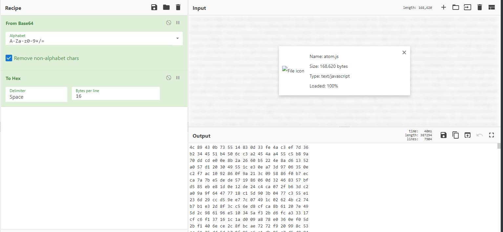

《信息网络传播权保护条例》第十八条、第十九条规定：“任何人不得故意避开、破坏或故意制造、向他人提供主要用于避开、破坏技术措施的装置或者部件，或者故意为他人避开或者破坏技术措施提供技术服务的，否则需要承担相应的民事责任、行政责任及刑事责任；
《计算机软件保护条例》第十四条规定：未经软件著作权人许可，不得故意避开或者破坏著作权人为保护其软件著作权而采取的技术措施的，否则需要承担相应的民事责任、行政责任及刑事责任。”
《中华人民共和国刑法》第二百八十六条 破坏计算机信息系统罪：违反国家规定，对计算机信息系统功能进行删除、修改、增加、干扰，造成计算机信息系统不能正常运行，后果严重的，处五年以下有期徒刑或者拘役；后果特别严重的，处五年以上有期徒刑。
此内容仅为学习、交流，请勿非法用途使用！
之前写 markdown 一直都用的是 Typora（当然也会用 vscode），后来 Typora 付费了之后也就买了正版，这次看到有关于这个的逆向分析，也就来了一些兴趣觉得可以做一做。
实际上这次做这个先是看了相关的逆向分析帖子，所以说整个思路基本上也就是按照人家的来做的。Windows 下面和 Linux 下面的 Typora 还有些不太一样，这里就拿 Windows 下面的为例。
# 外面的保护
我们如果去阅读 Electron 相关的开发资料也就可以知道，在项目下面的 resources/app.asar 中间是项目实际运行有关的源码等文件。我们首先要做的也就是要去将这个文件进行解包。参考 asar 的使用指令，安装了之后这样进行解包：
npm install -g asar | |
asar extract /path/to/app.asar /path/to/extracted |
我们解包之后就会得到三个文件： atom.js ， main.node ， package.json 。其中 package.json 是打包有关的内容，我们暂且不需要关。
打开 atom.js 文件之后，发现里面是 base64 格式的编码。
用 cyberchef 之类的工具解码发现还是乱码，看不出什么东西来，很明显是加密之后的内容。

那下面要看的也就是 main.node ，拖进 detect it easy 可以看到这是个 64 位的动态链接库。
理所当然地，拖进 IDA。
直接看也看不出什么东西，包括字符串也找不到什么有用的内容。不过用 FindCrypto 可以找到一些有趣的东西。
这里找到了 AES 的密码学组件，接下来顺着调用关系向上寻找。以 RijnDael_AES_LONG_inv_180056F60 为入手点，它在函数 sub_180007320 中被使用。
接下来来看这个函数，按照惯例还是 F5 一下， __int64 __fastcall sub_180007320(unsigned __int8 *a1, __int64 a2) 接收两个参数 a1 和 a2 。
这个函数体比较长，我们挑出其中的几段来看：
v2 = a1; | |
v3 = a2 - (_QWORD)a1; | |
v4 = 4i64; | |
do | |
{ | |
v5 = 4i64; | |
do | |
{ | |
*a1 ^= a1[v3 + 224]; | |
++a1; | |
--v5; | |
} | |
while ( v5 ); | |
--v4; | |
} | |
while ( v4 ); |
v2 取 a1 的地址， v3 取 a2 的地址减去 a1 的地址也就是一个偏移量，实际上后面异或语句 *a1 ^= a1[v3 + 224]; 也就是 a1[i] ^= a2[i + 224] 这样的功能。这一段代码的功能也就是将 a1 每一个字节和 a2 的 224 字节开始的位置进行异或。 v2 则是起到了一个保存 a1 的作用，因为 a1 在循环中被改掉了。
另外也能看出来这个分组实际上就是 16 字节，基本上就可以猜出来这是 AES 的轮密钥加。
下面这一段代码基本上就能够看出来 AES 循环的形状：
v6 = 13; | |
v7 = v3 + 208; // 224 - 16 = 208 | |
do | |
{ | |
// 轮函数函数体 | |
} | |
while ( v6 ); |
可以看到这个函数执行了 13 轮循环，也就是 AES-256 的执行的轮数。 v7 相较于上一次递减 16，这个也就是 AES 的轮密钥的长度 ——16 字节。
接下来是轮函数体：
// 行移位 | |
v8 = v2; | |
v9 = v2[13]; | |
v10 = 4i64; | |
v2[13] = v2[9]; | |
v2[9] = v2[5]; | |
v2[5] = v2[1]; | |
v11 = v2[10]; | |
v2[1] = v9; | |
v12 = v2[2]; | |
v2[2] = v11; | |
v13 = v2[14]; | |
v2[10] = v12; | |
v14 = v2[6]; | |
v2[6] = v13; | |
v15 = v2[7]; | |
v2[14] = v14; | |
v16 = v2[3]; | |
v2[3] = v15; | |
v2[7] = v2[11]; | |
v2[11] = v2[15]; | |
v2[15] = v16; | |
// 字节替换 | |
do | |
{ | |
v17 = v8; | |
v18 = 4i64; | |
do | |
{ | |
v19 = *v17; | |
v17 += 4; | |
*(v17 - 4) = RijnDael_AES_LONG_inv_180056F60[v19]; | |
--v18; | |
} | |
while ( v18 ); | |
++v8; | |
--v10; | |
} | |
while ( v10 ); | |
// 轮密钥加 | |
v20 = v2; | |
v21 = 4i64; | |
do | |
{ | |
v22 = 4i64; | |
do | |
{ | |
*v20 ^= v20[v7]; | |
++v20; | |
--v22; | |
} | |
while ( v22 ); | |
--v21; | |
} | |
while ( v21 ); | |
// 列混合 | |
sub_180007540(v2); | |
v7 -= 16i64; | |
--v6; |
其中调用的 sub_180007540 函数是进行的列混合操作，可以从伪代码中看出来，这里就不放上来了。
可以看出来这个函数实际上就是 AES-256 的解密过程。
继续向上一级， __int64 __fastcall sub_180006AC0(__int64 a1, unsigned __int8 *a2, unsigned int a3) 这个函数。
__int64 __fastcall sub_180006AC0(__int64 a1, unsigned __int8 *a2, unsigned int a3) | |
{ | |
unsigned __int8 *v3; // rbx | |
__int64 v5; // rdi | |
unsigned __int64 v6; // rsi | |
__int128 v7; // xmm0 | |
__int64 v8; // rcx | |
__int64 result; // rax | |
if ( a3 ) // 密文总长度 | |
{ | |
v3 = a2; | |
v5 = a1 + 240 - (_QWORD)a2; | |
v6 = (((unsigned __int64)a3 - 1) >> 4) + 1; // block size = 16 | |
do | |
{ | |
v7 = *(_OWORD *)v3; | |
aes_ecb_decrypt(v3, a1); // 前面的解密函数 | |
v8 = 16i64; // block size = 16 | |
do | |
{ | |
result = v3[v5]; // 分块将密文解密后的结果和上一块异或 | |
*v3++ ^= result; // 经典的 CBC 模式 | |
--v8; | |
} | |
while ( v8 ); | |
v5 -= 16i64; | |
*(_OWORD *)(a1 + 240) = v7; | |
--v6; | |
} | |
while ( v6 ); | |
} | |
return result; | |
} |
可以看出来这个函数实际上就是 AES-CBC 模式的解密函数。第一个参数 a1 是所有的轮密钥，第二个参数 a2 是指向密文 / 明文的指针，第三个参数 a3 是密文总长度。
继续向上一级查看。上一级是 sub_180003E40 函数，这个函数非常的长。
...... | |
v6 = *a2; | |
if ( (unsigned int)napi_get_named_property(*a2, Block, "Buffer", &v29) ) | |
{ | |
sub_180003250(v42, v6); | |
CxxThrowException(v42, (_ThrowInfo *)&_TI4_AVError_Napi__); | |
} | |
v7 = v29; | |
v27 = *(_QWORD *)(a3 + 8); | |
v8 = *a2; | |
if ( (unsigned int)napi_create_string_utf8(*a2, "base64", 6i64, &v25) ) | |
{ | |
sub_180003250(v42, v8); | |
CxxThrowException(v42, (_ThrowInfo *)&_TI4_AVError_Napi__); | |
} | |
v28 = v25; | |
...... |
函数最开始是这样的一段代码，基本上可以看出来是调用了 node js API 进行了读取和 base64 解码的操作，操作的结果也就存储在了 Block 中。
向下寻找调用上面 AES CBC 解密的部分：
char v45[256]; // [rsp+1C0h] [rbp+C0h] BYREF | |
...... | |
sub_18000B060(Block, *v12, v13); // 改名叫做 spec_func 吧 | |
sub_180007000(v45, v32, v10); | |
aes_cbc_decrypt((__int64)v45, (unsigned __int8 *)Block, v13); |
在调用了 aes_cbc_decrypt 之前，先执行了 sub_180007000 这个函数，并且这个函数的一个参数 v45 是作为解密密钥传进去的，所以说 sub_180007000 大概率是轮密钥的生成函数。这里在该函数处下断点，通过 IDA 动态调试。
然而这里和分析有出入的地方在于，查看内存里面的信息发现 aes_cbc_decrypt 执行之后， Block 里面并不是 atom.js 的明文。
spec_func((__m128i *)v32, &v46, 0x20ui64); | |
v33 = v11; | |
v12 = (const __m128i **)sub_7FFDEBB85C00(&v30, &v27); | |
v13 = (char *)v12[1] - (char *)*v12; | |
Block = operator new(v13); | |
spec_func((__m128i *)Block, *v12, v13); | |
sub_7FFDEBB87000((__int64)v45, (__int64)v32, v10); | |
aes_cbc_decrypt((__int64)v45, (unsigned __int8 *)Block, v13); | |
v14 = (__m128i *)operator new(v13 + 1); | |
spec_func(v14, (const __m128i *)Block, v13); //<--- 到这里之后才是 v14 里面是明文 |
进入 spec_func(__m128i *a1, const __m128i *a2, unsigned __int64 a3) 里面的话，这里是将参数 a2 指向的数据存入 a1 指向的数据。
这样子我们再回头看这几个函数：
spec_func((__m128i *)v32, &v46, 0x20ui64);// <-- 将 v46 存放的 Key 放入 v32 | |
v33 = v11; | |
v12 = (const __m128i **)sub_7FFDEBB85C00(&v30, &v27); | |
v13 = (char *)v12[1] - (char *)*v12; | |
Block = operator new(v13); | |
spec_func((__m128i *)Block, *v12, v13); | |
sub_7FFDEBB87000((__int64)v45, (__int64)v32, v10); // <-- 轮密钥派生 | |
aes_cbc_decrypt((__int64)v45, (unsigned __int8 *)Block, v13); // <-- 解密 | |
v14 = (__m128i *)operator new(v13 + 1); | |
spec_func(v14, (const __m128i *)Block, v13); //<--- 到这里之后才是 v14 里面是明文 |
我们导出 v46 中存放的数据：
auto file, fname, i, address, size, x; | |
address = /* &v46 */; | |
size = 32; | |
fname = "C:\\Users\\syml\\Desktop\\typora-crack\\key.txt"; | |
file = fopen(fname, "wb"); | |
for (i=0; i<size; i++, address++) | |
{ | |
x = DbgByte(address); | |
fputc(x, file); | |
} | |
fclose(file); |
CBC 模式的 IV 是密文的前 16 字节，我们可以完成解密脚本：
from Crypto.Cipher import AES | |
from Crypto.Util.Padding import unpad | |
import base64 | |
with open('key.txt', 'rb') as f1, open("atom.js", "rb") as f2: | |
key = f1.read() | |
ciphertext = base64.b64decode(f2.read()) | |
iv = ciphertext[0:16] | |
ciphertext = ciphertext[16:] | |
aes = AES.new(key, AES.MODE_CBC, iv) | |
plaintext = aes.decrypt(ciphertext) | |
with open("atom_decrypt.js", "wb") as f: | |
f.write(unpad(plaintext, 16)) |
# 混淆的 JavaScript
本来以为折腾完外面的 AES 加密就完事了，但是实际上之前折腾最久的还是改里面 javascript 代码的逻辑……
解密之后出来的是大量的经过压缩的 js 代码，首先先格式化一下，得到稍微适合人类阅读一点的代码。（但是所有的变量名都没有了，这是痛苦的）
根据 Typora 的授权页面的特点，我们重点去搜索 License 、 Invalid 这样的字符串，找到了这部分代码：
(m.handle( | |
"addLicense", | |
async (e, { email: t, license: n, force: o }) => { | |
try { | |
return await (async function (e, t, n) { | |
if ( | |
((e = (e || "") | |
.replace(/^[\s\u200b ]/g, "") | |
.replace(/[\s\u200b ]$/g, "")), | |
(t = (t || "") | |
.replace(/^[\s\u200b ]/g, "") | |
.replace(/[\s\u200b ]$/g, "")), | |
!/^[^\s@'"/\\=?]+@[^\s@'"/\\]+\.[^\s@'"/\\]+$/.test(e)) | |
) | |
return [!1, "Please input a valid email address"]; | |
if (!Y(t)) return [!1, "Please input a valid license code"]; |
可以看到这一部分是实现对输入邮箱和序列号的本地验证。其中验证序列号的函数 Y(t) 是这样的：
const Y = (e) => { | |
const r = "L23456789ABCDEFGHJKMNPQRSTUVWXYZ"; | |
if (!/^([A-Z0-9]{6}-){3}[A-Z0-9]{6}$/.exec(e)) return !1; | |
// 验证格式 | |
var e = e.replace(/-/g, ""), | |
t = e.substr(22); | |
return ( | |
!e.replace(/[L23456789ABCDEFGHJKMNPQRSTUVWXYZ]/g, "") && | |
t == | |
((e) => { | |
for (var t = "", n = 0; n < 2; n++) { | |
for (var o = 0, i = 0; i < 16; i += 2) | |
o += r.indexOf(e[n + i]); | |
(o %= r.length), (t += r[o]); | |
} | |
return t; | |
// 校验？ | |
})(e) | |
); | |
}, |
可以直接删除这部分逻辑，强制返回 true 。
接下来，负责激活的函数生成一个请求 json，其中包含了版本、序列号、邮箱和设备信息等。
t = { | |
v: A() + "|" + l.getVersion(), | |
license: t, | |
email: e, | |
l: await G(), // 获取主机名 | |
f: await M(), // 获取机器码 | |
u: l.setting.generateUUID(), | |
type: global.devVersion ? "dev" : "", | |
force: n, | |
}; | |
JSON.stringify(t); |
这部分信息会被发送给验证服务器，并返回一个结果：
try { | |
var o = await R("api/client/activate", t, !0); // 发送请求 | |
if ( | |
(JSON.stringify(o.data), | |
console.log( | |
"[License] response code is " + o.data.code | |
), | |
o.data.code == D.SUCCESS) | |
) | |
return (await Z(o.data.msg)) | |
? [!0, ""] | |
: [!1, "Please input a valid license code"]; |
我们可以直接修改代码中的 o.data.code 字段来将返回值强制设定为 SUCCESS 以通过验证。接下来我们来看函数 Z(o.data.msg) 。
async function Z(e) { | |
try { | |
var { fingerprint: t, email: n, license: o, type: i } = I(e) || {}; | |
return t == (await M()) && n && o | |
? (H(n, o, i), | |
d().put( | |
"SLicense", | |
e + "#0#" + new Date().toLocaleDateString("en-US") | |
), | |
(s = !0)) | |
: (console.log("[License] validate server return fail"), V(), !1); | |
} catch (e) { | |
throw ( | |
(console.error(e.stack), new Error("WriteActivationInfoFail")) | |
); | |
} | |
} |
这个函数首先通过一个 I(e) 将 o.data.msg 解析为一个字典格式，接下来比较其中的 fingerprint 和本地机器码是否一样，同时判断是否存在 email 和 license 。如果一样则执行下面的函数 H(n,o,i) 和 d().put() 。
查看 d().put(key, value) 方法的定义我们可以知道，这个函数是将注册表中 SFOTWARE/Typora 下的 key 值设置为 value ，在这里也就是将服务器返回的 o.data.msg 拼接上 #0# 和当前日期写入 Typora 注册表对应的 SLicense 键中。 H(n,o,i) 则是设置了一些参数并且将当前窗口上的 UNREGISTERED× 标签去掉。
那么重点就在于分析 I(e) 这个函数。
const I = (e) => { | |
if (!e) return e; | |
var t; | |
try { | |
t = Buffer.from(e, "base64"); | |
const n = a(289).publicDecrypt( | |
`-----BEGIN PUBLIC KEY----- | |
MIIBIjANBgkqhkiG9w0BAQEFAAOCAQ8AMIIBCgKCAQEA7nVoGCHqIMJyqgALEUrc | |
...... | |
`, | |
t | |
); | |
return JSON.parse(n.toString("utf8")); | |
} catch (e) { | |
return null; | |
} | |
}, |
这个函数传入的数据通过 base64 解密，并通过一个公钥解密得到一个 json 形式的字符串。
这个字符串根据前面的内容也就是设备的指纹、邮箱和 license，服务器对我们提交的信息进行了验证并使用自己的私钥进行了签名。因为无法获取到服务器的私钥，所以我们也无法直接去伪造这个数据。不过我们可以直接修改这函数使其直接返回一个固定的字典格式的数据。这样，无论我们提交上去了什么样的数据，服务器返回怎么样的报错信息，状态码都会被设置为 SUCCESS ，且 I(e) 都会返回一个在本地看起来有效的数据。这个数据会被函数 Z 写入本地注册表并在每一次读取中生效。
另一处对本地注册表的引用在这里。
_ = () => { | |
const e = d().get("SLicense"); | |
if (!e) return null; | |
var [t, n, o] = e.split("#"), | |
t = I(t); | |
return t && t.fingerprint == i | |
? (Object.assign(t, { failCounts: n, lastRetry: new Date(o) }), t) | |
: null; | |
}, |
这里程序会读取注册表项中的 SLicense 并且验证其是否有效。当然对于经过修改的程序，这是始终有效的。此外还有授权的验证部分：
try { | |
ee(); | |
const e = await a(225).post(E + "/api/client/renew", n, { | |
timeout: 4e4, | |
headers: { "Cache-Control": "no-cache" }, | |
}); | |
JSON.stringify(e.data), | |
e.data.success || | |
(console.warn("[renewL]: unfill due to renew fail"), | |
V(e.data.msg)), | |
d().put("SLicense", [e.data.msg, 0, o].join("#")); | |
} catch (e) { | |
e.stack, | |
r.captureException(e, { level: "warning" }), | |
console.warn("Failed to Renew L"); | |
var [t, n] = (i = d().get("SLicense")).split("#"), | |
i = [t, (n = +n + 1), o].join("#"); | |
d().put("SLicense", i); | |
} |
这一段代码会验证本地的 SLicense 是否正确，因此我们需要将这一段代码进行修改或是直接删去。
这样就能基本上完成对软件的破解。
在完成对 atom.js 的修改之后，需要重新对文件进行加密和打包。
from Crypto.Cipher import AES | |
from Crypto.Util.Padding import pad | |
import base64 | |
with open('iv.txt', 'rb') as f1, open('key.txt', 'rb') as f2, open("atom_decrypt.js", "rb") as f3: | |
iv = f1.read() | |
key = f2.read() | |
plaintext = f3.read() | |
aes = AES.new(key, AES.MODE_CBC, iv) | |
ciphertext = aes.encrypt(pad(plaintext, 16)) | |
ciphertext = iv + ciphertext | |
base64_cipher = base64.b64encode(ciphertext) | |
with open("atom.js", "wb") as f: | |
f.write(base64_cipher) |
打包的指令为 asar pack <sources> <target> 。替换原先的文件即可完成。
# 总结
许多地方都在强调的一点是，Electron 做了一个打包工作，诸如 asar 这样的实际上是不能保证源码的安全的。
参考资料中 electron-asar-encrypt-demo 这个项目所做的就是利用 C++ 进行了一层封装，将源码进行了加密以保证安全。但是像 Typora 这样的在 APPDATA/Loca/Temp 下面也是能够找到未加密的 node js 源码，所以这个过程做的更多的还是保护一个防篡改的功能。
但是显然简单的 AES-CBC 是防不了篡改的……
所以说理论上应该有一些更有效的手段吧？比如对源码先加上一个哈希？或者用私钥对源码进行签名？
不过这样的手段还是能够通过 patch 可执行文件来解决…… 不过这样增加了破解的难度效果恐怕还是不错的吧……
# 参考资料
[1] https://www.52pojie.cn/thread-1553967-1-1.html
[2] https://github.com/Mas0nShi/typoraCracker
[3] https://github.com/toyobayashi/electron-asar-encrypt-demo